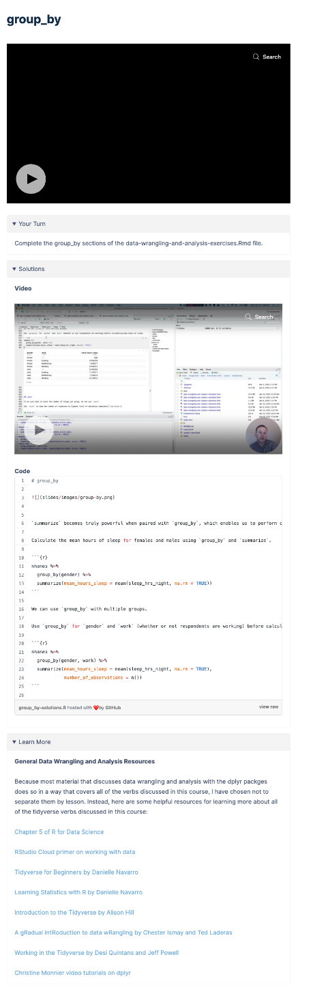
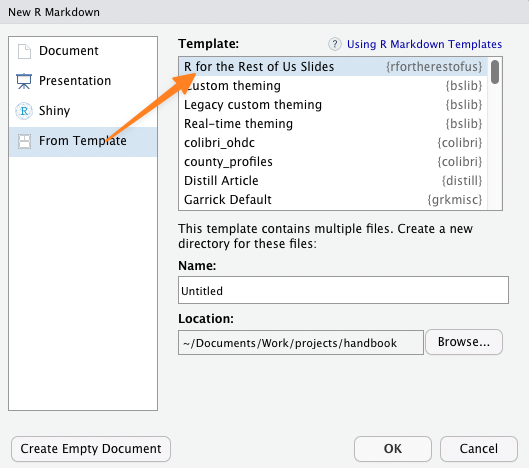
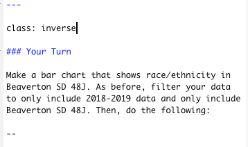

Curriculum
Outline
You’ll start out by creating an outline of your course. This will be done in the GitHub repo that David creates for your course.
Please just create an outline.Rmd file for this. Use the following format:
Section Name (H1)
Lesson Title (H2)
Overview of lesson
My Turn (H3)
Overview of what you’ll demonstrate
Your Turn (H3)
Exercise for student
Solutions Code (H3)
Code used for solution to Your Turn
Learn More (H3)
Text with additional info, resources, etc on topic of lesson
Sections
R for the Rest of Us courses are broken up into lessons and sections. Related lessons should be combined into sections. For example, my Fundamentals of R course has sections on RMarkdown, Data Wrangling and Analysis, and Data Visualization. 
Lessons
The number of lessons varies by course. However, as a general rule, core courses tend to be longer (between 30 and 40 lessons) while topics courses tend to be shorter (15 to 30 lessons).
Each lesson should cover one distinct topic. Each lesson within a section should be short and focus on a single topic. As you’re making your materials, if you think that a video demonstrating the concept will go beyond 10 minutes or so, consider breaking it into multiple lessons.
Each lesson has the following sections:
- Video overview
- Your Turn exercise (some lessons don’t lend themselves to this and don’t have an exercise)
- Code and video solutions (only if there is a Your Turn)
- Learn More section with links to resources on that topic
Here’s what it looks like (you can see this lesson here).

Lessons will typically start with your face on camera, then go to full screen of your slides/RStudio. Here’s an example.
Materials
The materials for each courses lives in a GitHub repo on the R for the Rest of Us organization account. David will create this and add you to the repo.
Slides
Slides for R for the Rest of Us courses are made using the xaringan package.
There is a custom template to use to make slides in the R for the Rest of Us style. You can access this by installing the rfortherestofus package using the following code:
You can then add slides by going to File > New File > RMarkdown and selecting the R for the Rest of Us template.

Please create a slides directory where all of your slides will live.
You can create slides as follows:
Most lessons should have a My Turn and a Your Turn section. The slide for the My Turn section should have an orange background and the slide for the Your Turn section should have a dark background. To do this, add the class my-turn and the class inverse to your slides as follows:

Other Materials
Any other materials that you want people to access can live in the repo. Please organize however you see fit.